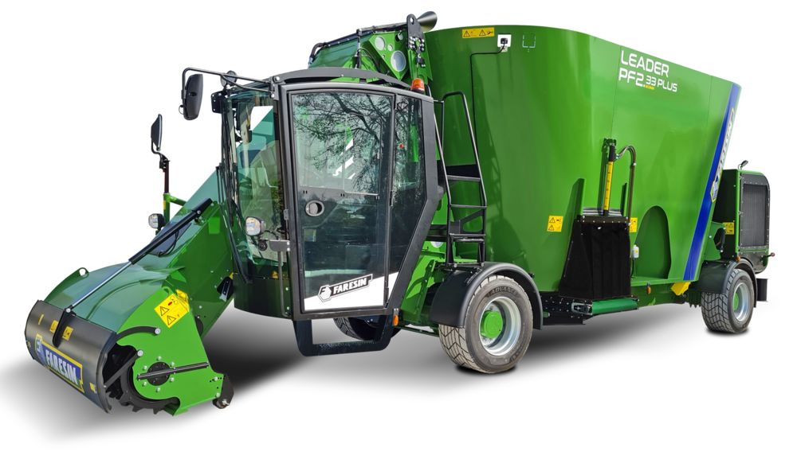
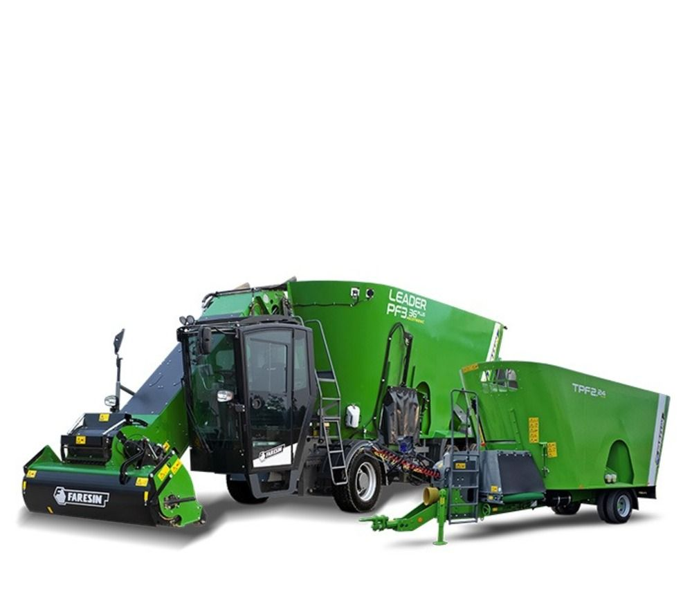
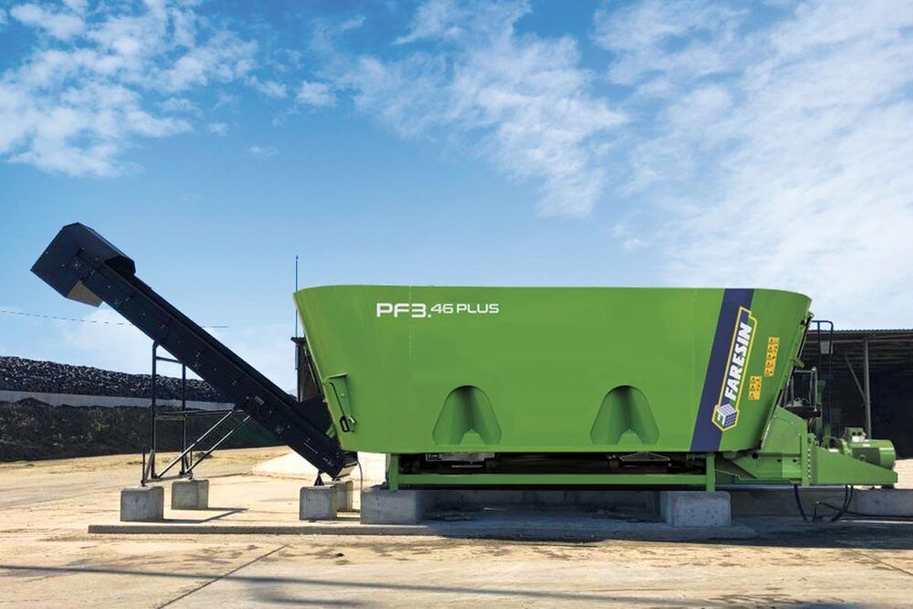
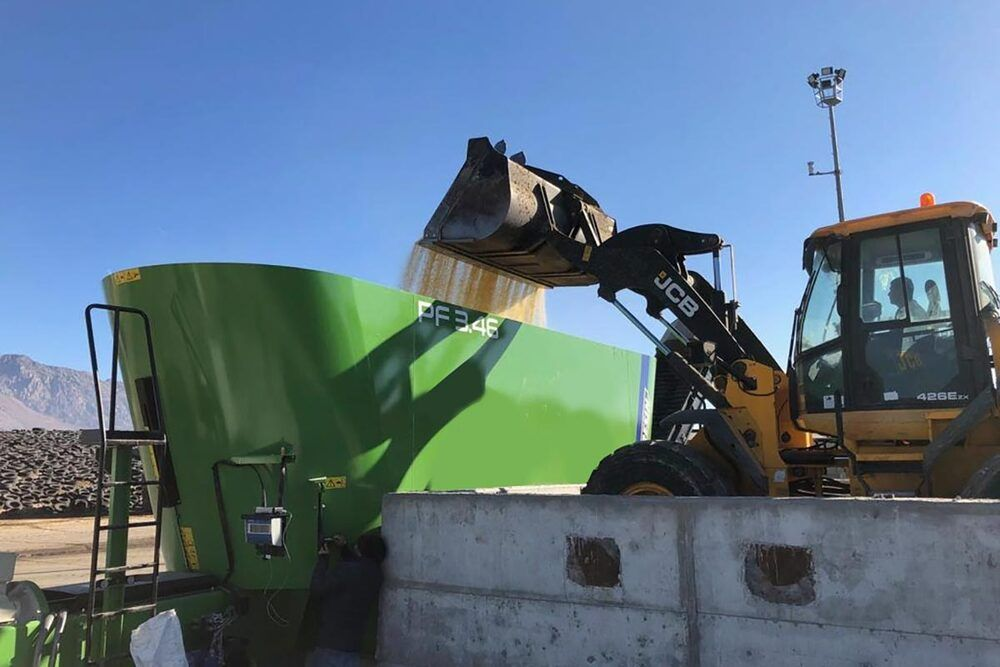
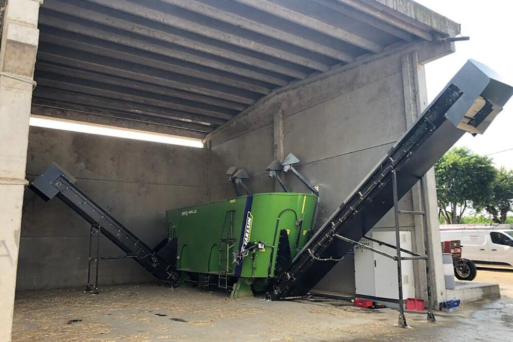

Faresin өздігінен жүретін және тіркемелі азық араластырғыштары сапа жағынан да, алатын орны жағынан да мал фермаларының барлық қажеттіліктерін барынша қанағаттандырады.
Үлкен жүктеу сыйымдылығы кез келген фермердің қажеттілігін өтейді: азықты дайындау мен таратуға кететін уақытты үнемдеумен қатар, дұрыс күйіс қайыруды ынталандыратын азықпен азықтандыру арқылы жануарлардың әл-ауқаты жақсарады.






Faresin қызықтырады ма?
Қазақстандағы ресми дилер: жеткізу, монтаж, сервис және қосалқы бөлшектер.